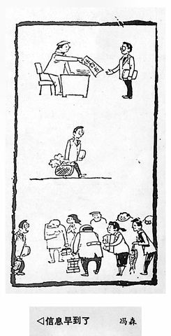
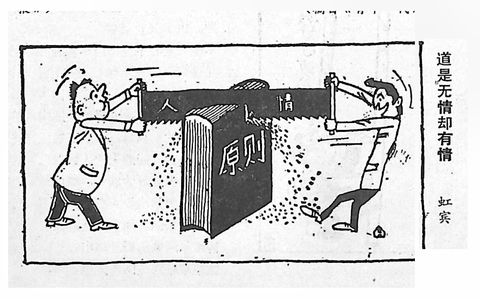
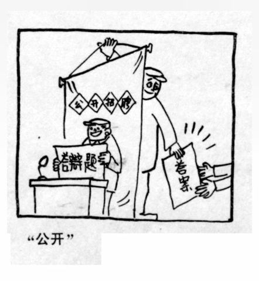
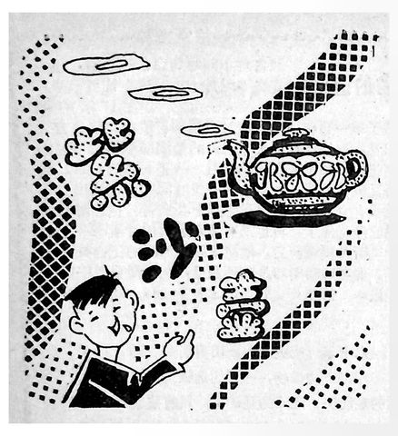

Connections (guanxi) 24
-
 劝告 · Advice
劝告 · Advice
Nie Xuhua 聂旭华. Renshi (Personnel), 1986 no. 1 (whole no. 4), inside back cover. -
 卖嘴"专业户" · A "Mouth-Selling Specialist"
卖嘴"专业户" · A "Mouth-Selling Specialist"
Yin Guoxing 尹国兴. Renshi (Personnel), 1986 no. 1 (whole no. 4), inside back cover. -

信息早到了 · The News Got There First
Feng Sen 冯森. Renshi (Personnel), 1986 no. 1 (whole no. 4), inside back cover. -
 "招贤" · "Recruiting the Worthy"
"招贤" · "Recruiting the Worthy"
Unattributed. Renshi (Personnel), 1986 no. 4 (whole no. 7), p. 11. Reprinted from Xin guancha (New Observer). -
 朝"圣" · Pilgrimage to the Sage
朝"圣" · Pilgrimage to the Sage
Wang Xiaojian 王晓健. Renshi (Personnel), 1986 no. 8 (whole no. 11), p. 14. -

道是无情却有情 · Heartless, Yet Full of Feeling
Hong Bin 虹宾. Renshi (Personnel), 1986 no. 11 (whole no. 14), p. 42. -
 心绪（插图） · Agitation (illustration)
心绪（插图） · Agitation (illustration)
Unattributed. Renshi (Personnel), 1987 no. 2 (whole no. 17), p. 47. -
 好风凭借力 送我上青云 · On a Good Wind I Ride to the Blue Clouds
好风凭借力 送我上青云 · On a Good Wind I Ride to the Blue Clouds
Ji Xing 纪星. Renshi (Personnel), 1987 no. 2 (whole no. 17), inside back cover. -
 桥 · Bridge
桥 · Bridge
Gao Fengcheng 高风成. Renshi (Personnel), 1987 no. 3 (whole no. 18), p. 44. -
 伯乐相面（献媚者得宠） · Bole Reads Faces (The Flatterer Wins Favour)
伯乐相面（献媚者得宠） · Bole Reads Faces (The Flatterer Wins Favour)
Wang Letian 王乐天. Renshi (Personnel), 1987 no. 7 (whole no. 22), inside back cover. -
 无题 · Untitled
无题 · Untitled
Wang Xiaogen 王小根. Renshi (Personnel), 1988 no. 1 (whole no. 28), inside back cover. -
 有一块是从后门来的 · One of Them Came In by the Back Door
有一块是从后门来的 · One of Them Came In by the Back Door
Wang Xiaogen 王小根. Renshi (Personnel), 1988 no. 1 (whole no. 28), inside back cover. -
 原来如此（题图） · So That's How It Is (title drawing)
原来如此（题图） · So That's How It Is (title drawing)
Unattributed. Renshi (Personnel), 1988 no. 2 (whole no. 29), p. 48. -
 圈（插图） · Circles (illustration)
圈（插图） · Circles (illustration)
Unattributed. Renshi (Personnel), 1988 no. 8 (whole no. 35), p. 48. -
 水仙花开（题图） · The Narcissus Blooms (title drawing)
水仙花开（题图） · The Narcissus Blooms (title drawing)
Unattributed. Renshi (Personnel), 1988 no. 9 (whole no. 36), inside back cover. -
 生活的小提琴（插图） · Life's Little Violin (illustration)
生活的小提琴（插图） · Life's Little Violin (illustration)
Unattributed. Renshi (Personnel), 1988 no. 10 (whole no. 37), p. 48. -
 记性 · Memory
记性 · Memory
Bian Jiahua 卞家华. Renshi (Personnel), 1988 no. 11 (whole no. 38), p. 40. -
 《崂山道士》新编 · “The Taoist of Laoshan,” a New Version
《崂山道士》新编 · “The Taoist of Laoshan,” a New Version
Drawn by Jiang Peifeng 江沛丰; poem by Ma Liang 马良. Renshi (Personnel), 1988 no. 12 (whole no. 39), inside back cover. -

“公开” · “Open”
Supplied by Jiang Sizhong 蒋思忠. Renshi (Personnel), 1989 no. 11 (whole no. 50), inside back cover. -
 醒（题图） · Sobering Up (title illustration)
醒（题图） · Sobering Up (title illustration)
Unattributed. Renshi (Personnel), 1990 no. 2 (whole no. 53), p. 40. -

紫砂壶（题图） · The Yixing Teapot (title illustration)
Unattributed. Renshi (Personnel), 1990 no. 3 (whole no. 54), p. 40. -
 失算（插图） · A Miscalculation (illustration)
失算（插图） · A Miscalculation (illustration)
Unattributed. Renshi (Personnel), 1990 no. 5 (whole no. 56), p. 40. -
 “秘办” · “The Secretary's Office”
“秘办” · “The Secretary's Office”
Wang Yan 王燕. Renshi (Personnel), 1990 no. 8 (whole no. 59), inside back cover. -
 人事工作漫笔 · Sketches of Personnel Work
人事工作漫笔 · Sketches of Personnel Work
Sun Xiaoming 孙小鸣. Renshi (Personnel), 1990 no. 11 (whole no. 62), inside back cover.